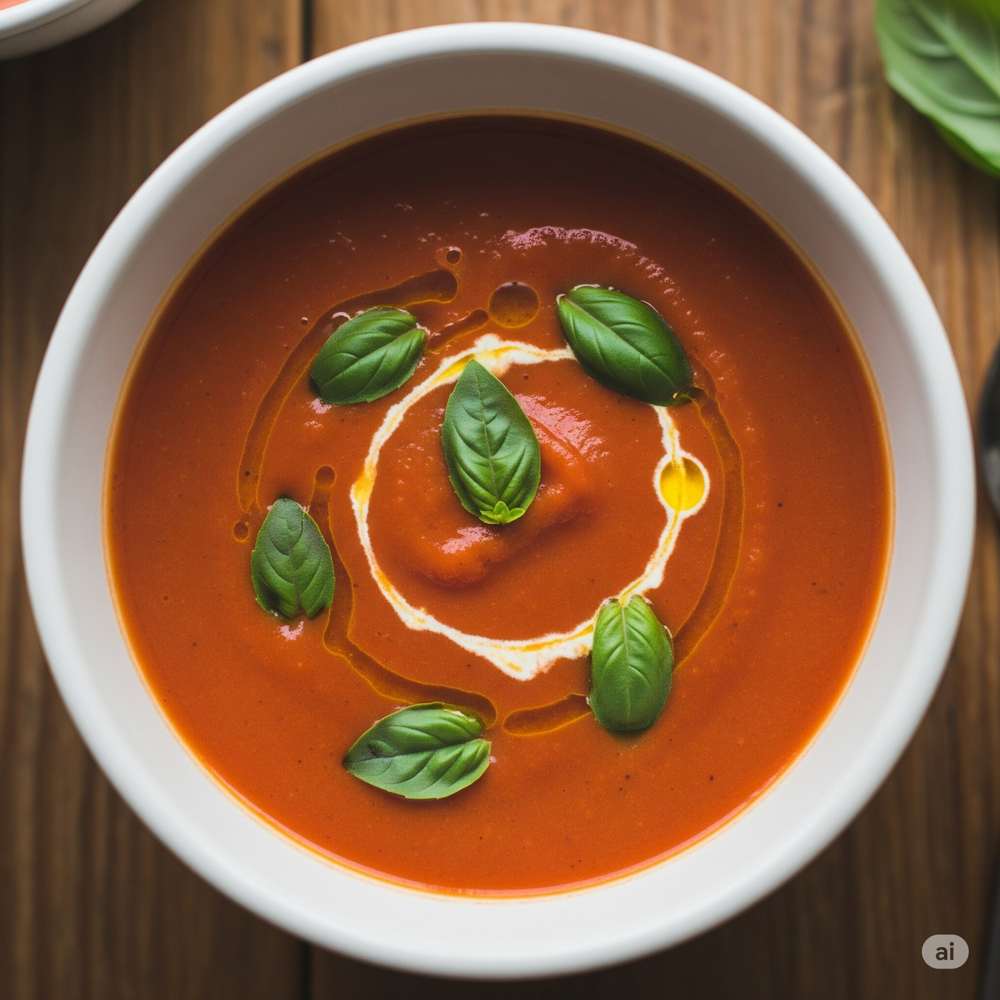

Home
Tomato Soup

Description
Nothing is as cozy as a good and rich tomato soup.
Perfect for those rainy days, when we need an embrace. Don't forget the grilled cheeese sandwich
on the side.
Ingredients
- 1 kg Roma tomatoes
- 42 gr unsalted butter
- 4 cloves gralic, grated.
- 2 shallots, finely chopped
- 1 sprig sage
- 500-750 ml chicken stock
- 125 ml heavy whipping cream (a little extra, for serving)
- salt and pepper, to taste
- finely chopped chives or basil leaves
Steps
- Preheat oven at 200°C. Halve the tomatoes and place them cut-side
down on a baking sheet and roast them for 30 minutes or until charred
and soft.
- In a large saucespan, melt the butter and add shallots and garlic and cook
at medium heat until soft, watch out, it can burn if unatended. Add the tomatoes,
stock and sage, bring to a boil, then simmer for 30 minutes or until the mixture
is very soft.
- Remove the sage, mix in the heavy cream and season with salt and pepper.
Transfer to a blender and pulse until desired consistency (velvety smooth or
with little chunks).
- Serve in bowls while still hot and drizzle in heavy cream, olive oil and chives or
basil leaves.